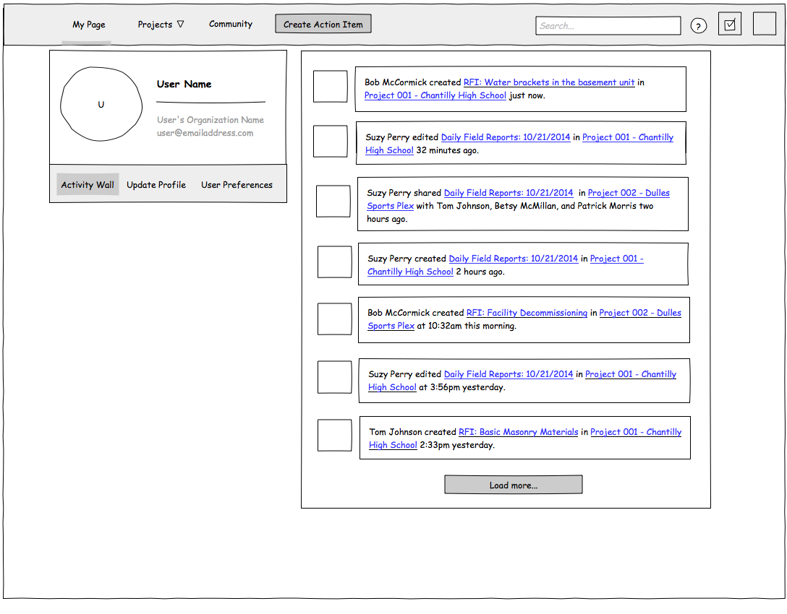
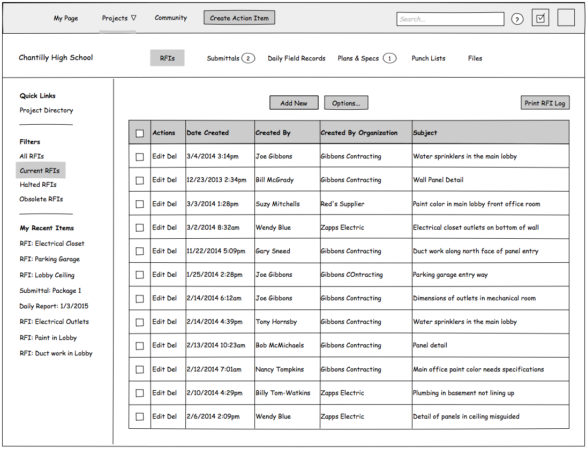
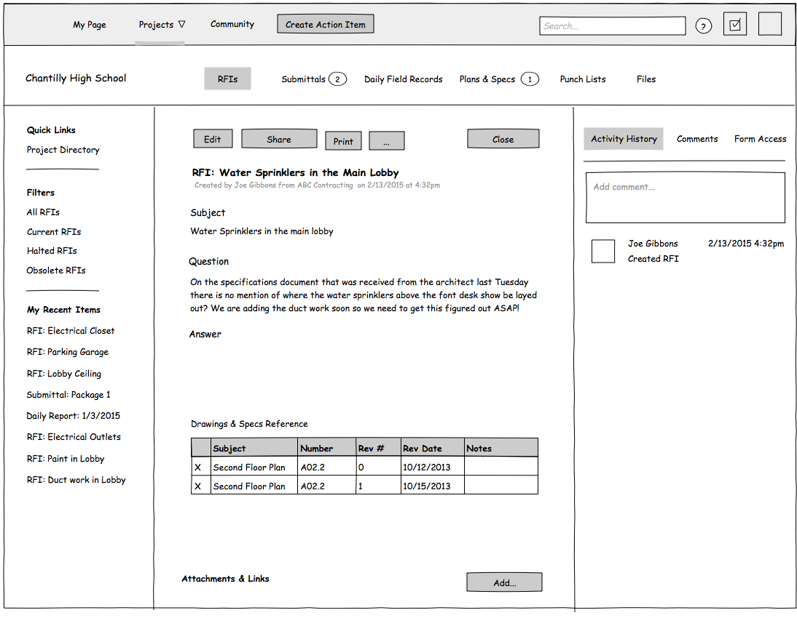
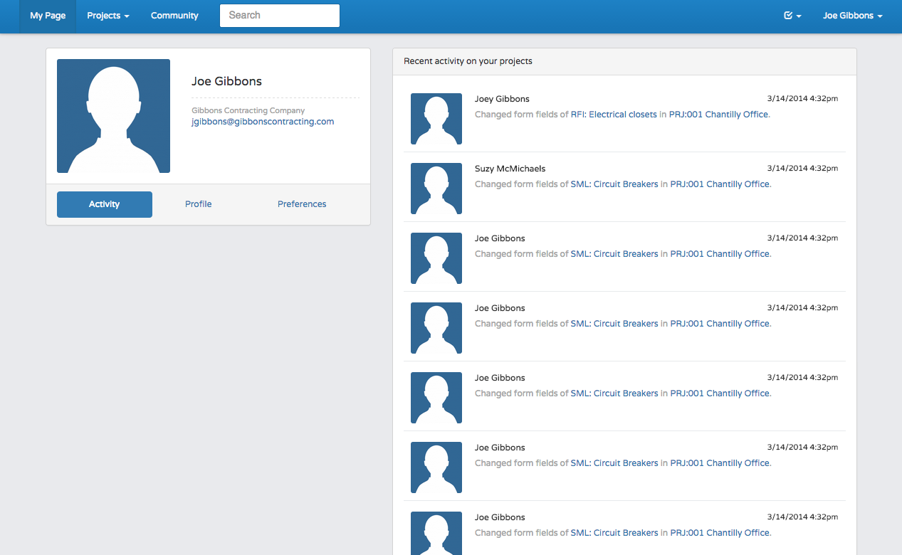
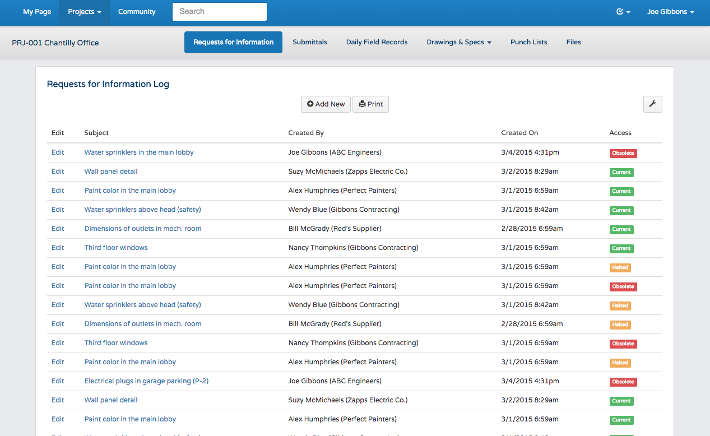
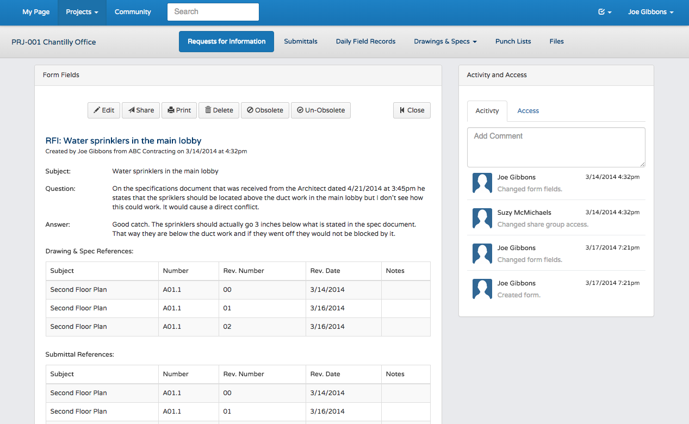

After graduating from Pennsylvania State University with a degree in Industrial Engineering I started working for a government services company outside of Washington, D.C. At night I took classes in front-end web development and developed a passion for building websites and designing and implementing the user interface for web applications. My toolset includes: HTML, CSS, Bootstrap, JavaScript, and JQuery. Below is a sampling or my work.
Clickable Wireframe Screenshots
  HTML Prototype Screenshots
  